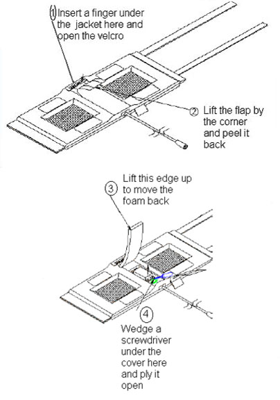
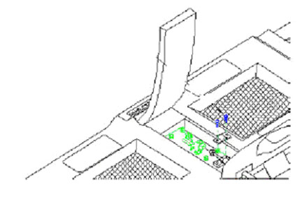
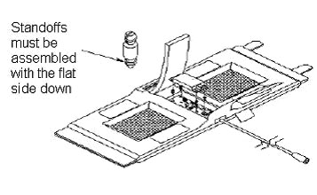

Operating Documentation
Direction 5670000, Rev# 1
Optima MR450w 1.5T Service Methods
Module Version 5.0, Version Date 1/18/10
Operating Documentation |
Simple removals that are clearly obvious are not described here. Unless otherwise noted, the steps for re-assembly are simply the reverse order of the steps described for disassembly.
| Required Persons | Procedure Timing |
| 1 | 30 minutes |
Follow this process to replace components of the 1.5T GP Flex Coil (M1085GF).
Standard Tool Kit
Cable Kit (2337313)
Hardware Kit (2337313-2)
1.5T GP Flex Coil (2320288)
1.5T Single-Channel Adapter (5176411)
Unless otherwise noted, the steps for re-assembly are simply the reverse order of the steps described for disassembly.
For disassembly: Refer to Illustration 1.
Illustration 1: Coil Disassembly

To re-assemble: Put the cover back on the posts and press on it till it snaps back into place. Push the foam flap under the jacket. Carefully put the fabric flap into place making sure that the Velcro on the edges lines up with the Velcro on the jacket. Tuck the end of the flap under the jacket. Press over the Velcro while making sure that no edges are left open.
Disassemble the coil by referring to Illustration 1. Unscrew the two nylon screws and remove the strain relief upper cover.
Unscrew (use two 8 mm wrenches: one on the circuit board female connector and one on the male cable connector) and remove the male SMA cable connector from the circuit board. Be careful not to twist the female SMA connector from the circuit board.
Remove the external cable from the coil (see Illustration 2).
Install the new cable. Stabilize the circuit board and the connector on the circuit board. Tighten until snug. Do not over-tighten; too much torque (>2 kgf-cm) can cause damage.
Put the strain relief back on. Reassemble the coils as per Section 4.1.
Illustration 2: Replacing the External Cable

Refer to Section 3.2 for FRU list.
To replace the cover assembly, refer to Section 4.1.
To replace the upper strain relief block and the two screws, refer to Section 4.2.
If a plastic standoff breaks it can be pulled out using a needle nose pliers. Insert a new standoff in its place while making sure that the flat end goes in first (see Illustration 3) .
Illustration 3: Replacing Mechanical Hardware

Perform 1.5T GP Flex Coil SNR Test.